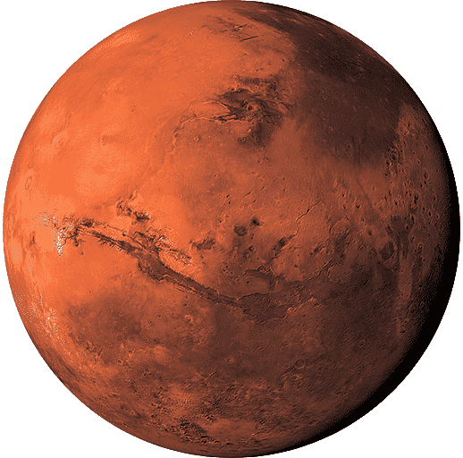

Marte

Es uno de los 4 planetas telúricos. Su parecido con la Tierra influyó en la creencia de vida marciana, pues su superficie presenta formaciones permanentes y casquetes polares que en realidad no están conformados por verdadero hielo, sino por una capa de escarcha o probablemente hielo seco.
Es el segundo planeta más pequeño del Sistema. Solar, sólo superado por Mercurio. Debido a la inclinación de su eje de rotación, experimenta estaciones como la Tierra que varían en duración debido a su órbita elíptica. No tiene anillos pero sí 2 satélites: Fobos y Deimos, descubiertos en 1877.
Completa una órbita alrededor del Sol en 687 días de la Tierra, lo que puede traducirse en 1 año marciano. Su período de rotación sideral es de 1.026 días terrestres, apenas un poco mayor que el período de rotación de la Tierra.
El mote de “planeta rojo” tiene una explicación muy sencilla. Sucede que el suelo marciano posee minerales de hierro que se oxidan y le otorgan una coloración rojiza que es posible distinguir desde la Tierra.
Su atmósfera es muy fina y tenue, compuesta principalmente por dióxido de carbono, nitrógeno y argón. Para mayor exactitud, se compone por un 96% de dióxido de carbono, un 2% de argón, un 2% de nitrógeno y de 1% de otro u otros elementos.
Diámetro: 6,792 km.
Masa: 6.4169 x 1023 kg.
Volumen: 1.63116 X 1011 km3.
Densidad: 3.934 g/cm3.
Temperatura promedio: -62 °C.